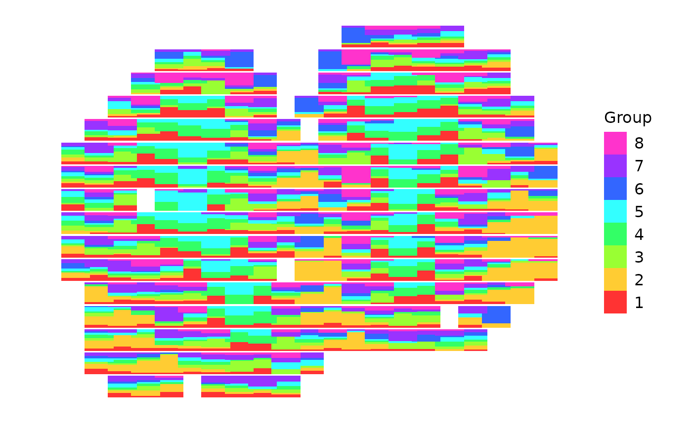
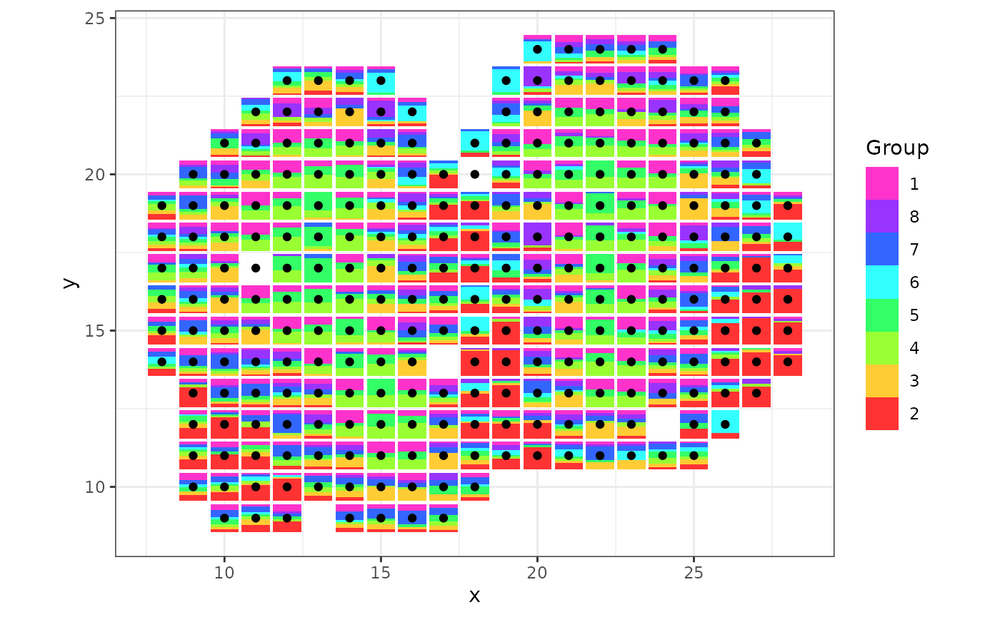

Getting started with scatterbars
Jean Fan and Dee Velazquez
2024-08-14
Source:vignettes/getting-started-with-scatterbars.Rmd
getting-started-with-scatterbars.RmdBelow is how to use scatterbar from the provided spatial transcriptomic data from the mouse olfactory bulb tissue sample.
library(scatterbar)
data("mOB")
plot(mOB$xy)
head(mOB$data)
#> 1 2 3 4 5
#> ACAACTATGGGTTGGCGG 0.1420916 0.05540521 0.2902388 0.00000000 0.1657935
#> ACACAGATCCTGTTCTGA 0.0000000 0.77541118 0.0000000 0.00000000 0.0000000
#> ACATCACCTGCGCGCTCT 0.3360811 0.00000000 0.0000000 0.32262562 0.3412932
#> ACATTTAAGGCGCATGAT 0.2239877 0.00000000 0.0000000 0.55189741 0.2241149
#> ACCACTGTAATCTCCCAT 0.1373168 0.08529107 0.2204332 0.00000000 0.0000000
#> ACCAGAGCCGTTGAGCAA 0.1364591 0.37986322 0.1499492 0.06702756 0.2147332
#> 6 7 8
#> ACAACTATGGGTTGGCGG 0.00000000 0.1329341 0.21353679
#> ACACAGATCCTGTTCTGA 0.14536750 0.0000000 0.07922131
#> ACATCACCTGCGCGCTCT 0.00000000 0.0000000 0.00000000
#> ACATTTAAGGCGCATGAT 0.00000000 0.0000000 0.00000000
#> ACCACTGTAATCTCCCAT 0.00000000 0.1876818 0.36927715
#> ACCAGAGCCGTTGAGCAA 0.05196769 0.0000000 0.00000000
scatterbar::create_scatterbar(mOB$data, mOB$xy)
We can change the order of how each bar is laid out by changing the order of the cell-type proportion matrix of spatial transcriptomic data. We can also combine scatterbar with other ggplot geoms and customization!
library(ggplot2)
scatterbar::create_scatterbar(mOB$data[, c(2,3,4,5,6,7,8,1)], mOB$xy, size_x = 1, size_y = 1, padding_x = 0.1, padding_y = 0.1) +
geom_point(data=mOB$xy, mapping=aes(x=x, y=y)) +
theme_bw() + ylab('y') 